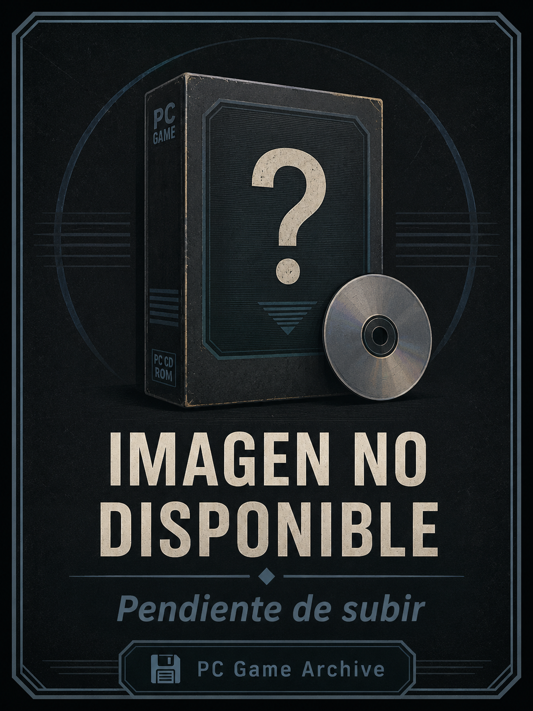

Ficha #000000
Acorazados
Acorazados es la edición española del simulador naval Dreadnoughts, desarrollado por Turcan Research Systems y programado por el Dr. Peter Turcan. Publicado en 1992 para IBM PC compatibles, recrea grandes enfrentamientos navales de la era de los acorazados, con especial atención a batallas de la Primera Guerra Mundial como Coronel, las Malvinas, Dogger Bank y Jutlandia. Su propuesta se centra en el mando táctico de flotas, la emisión de órdenes, el uso de señales, la visibilidad limitada por niebla y humo, el fuego artillero, los daños progresivos y la posición relativa de los buques. Frente a juegos navales más arcade, Acorazados pertenece a la tradición de los wargames de simulación compleja para PC, donde el jugador asume un rol cercano al de almirante y debe interpretar información incompleta, maniobrar formaciones y gestionar el alcance, el rumbo y la potencia de fuego. Esta edición distribuida en España por System 4 conserva especial interés documental por su localización al castellano, soporte en disquete de 3,5 pulgadas, requisitos para MS-DOS y compatibilidad con gráficos EGA/VGA y tarjetas de sonido Sound Blaster.
- Formato
- Big Box
- Plataforma
- MsDos
- Género
- Simulación naval Wargame Estrategia táctica Simulación histórica Combate naval
- Serie
- Todos Big Box
- Desarrollador
- Turcan Research Systems Ltd, Dr. Peter Turcan
- Distribuidor
- Turcan Research Systems Ltd, System 4 de España
- EAN
- —
Contenido de la edición
- Caja Big Box
- Disquete de 3,5 pulgadas
- Manual de instrucciones
- Mapa naval desplegable
- Documentación de escenarios y flotas
Preservación
- Protección
- No determinado
- Formato recomendado
- Otro
- Jugable en virtualización
- Sí
Edición en disquete de 3,5 pulgadas para MS-DOS. Para preservación se recomienda realizar imagen sectorial del disquete original, documentar etiqueta, caja, manual y mapa desplegable, y verificar la instalación en un entorno DOS virtualizado como DOSBox. No hay evidencia suficiente en la edición mostrada para confirmar un sistema anticopia concreto.